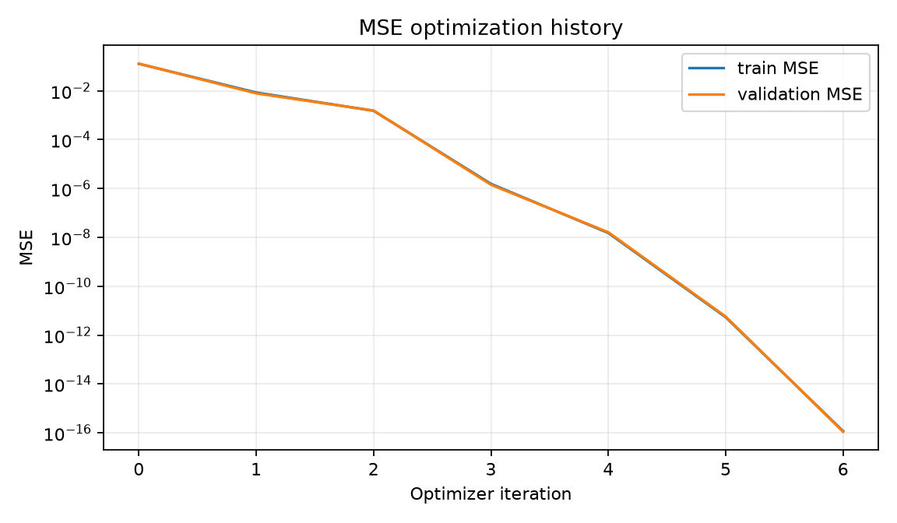
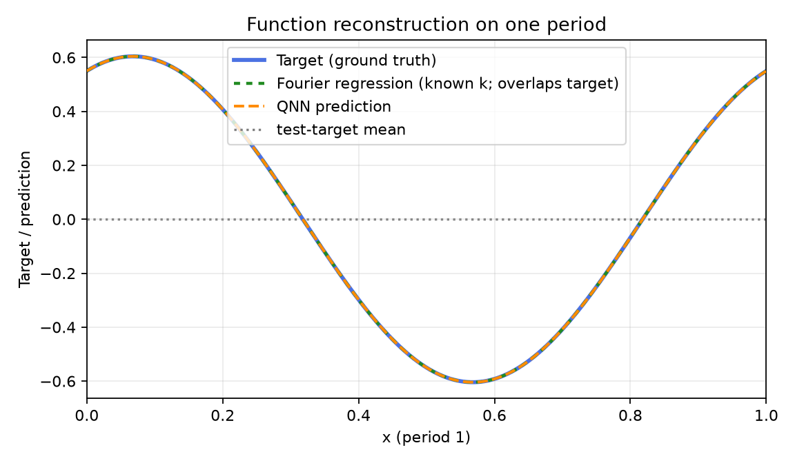
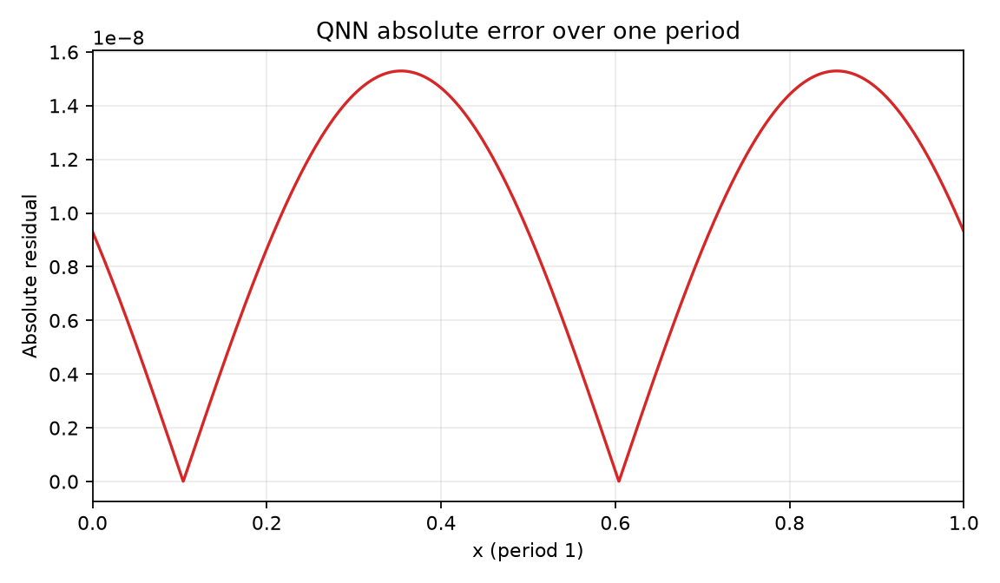
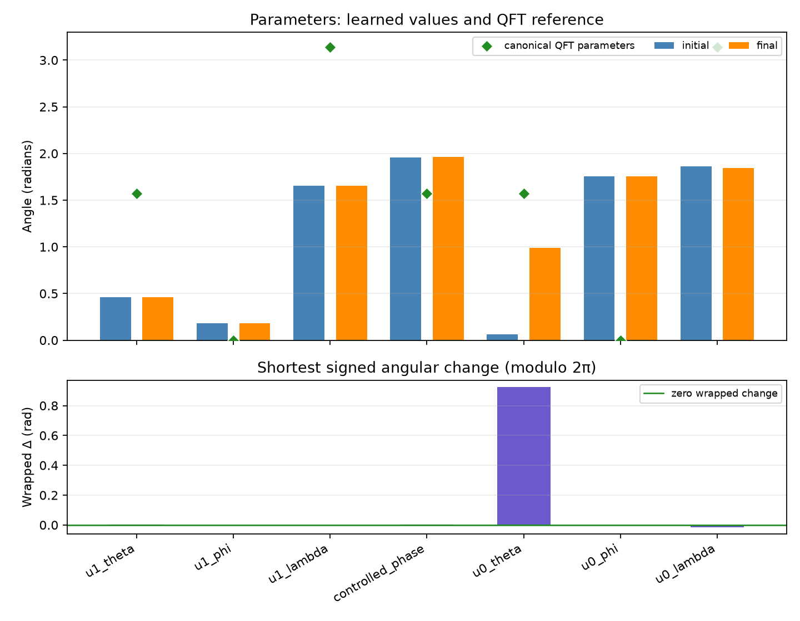

Comparison group: periodic-function-mse-zero-offset-ry-angle-encoding-z1-readout
Training loss: MSE only; no Frobenius/process-fidelity term or PINN residual.
Encoding: RY(2πx)|0⟩ on qubit 0, x∈[0,1), period 1.
Readout: ideal Pauli-Z expectation on qubit 1.
Absolute error over one period: mean=9.73631e-09, max=1.52938e-08; defined pointwise as |QNN prediction − target| on the 2048-point periodic grid.
{
"run_id": "20261017T013025714833Z_periodic-function-mse-zero-offset_seed-0045_9aeae8ec",
"status": "FINISHED",
"comparison_group": "periodic-function-mse-zero-offset-ry-angle-encoding-z1-readout",
"protocol_version": "0.1.0",
"objective": "training-set mean squared error only",
"loss_excludes": [
"process fidelity",
"Frobenius/unitary alignment",
"PINN/physics residual",
"frequency labels"
],
"encoding": "RY(2*pi*x)|0> on q0; x in [0,1), period 1",
"ansatz": "qft2_trainable_u_cp_u_swap",
"readout": "Pauli-Z expectation on q1",
"seed": 45,
"data_seed": 314159,
"optimizer": "L-BFGS-B",
"iterations": 6,
"function_evaluations": 64,
"optimizer_success": true,
"optimizer_message": "CONVERGENCE: NORM OF PROJECTED GRADIENT <= PGTOL",
"elapsed_seconds": 0.0628546070001903,
"initial_train_mse": 0.12789705189832676,
"final_train_mse": 1.173069264747157e-16,
"validation_mse": 1.1062537424106886e-16,
"test": {
"mse": 1.1709137784743145e-16,
"rmse": 1.082087694447319e-08,
"r2": 0.9999999999999993
},
"constant_baseline_test": {
"mse": 0.1898933590235803,
"rmse": 0.43576755159555,
"r2": -0.03270329551922346
},
"known_frequency_fourier_baseline_test": {
"mse": 7.351249449493811e-32,
"rmse": 2.7113187657473645e-16,
"r2": 1.0
},
"spectral_coefficient_mse_k0_to_16": 3.4396935925474558e-18,
"dense_grid_absolute_error_mae": 9.736311043277658e-09,
"dense_grid_absolute_error_max": 1.529375961983881e-08,
"target_peak_frequency": 1,
"predicted_peak_frequency": 1,
"frequency_peak_correct": true,
"qft_process_fidelity_diagnostic_only": 0.1870009304086887,
"initial_qft_process_fidelity_diagnostic_only": 0.20703761366933787
}




